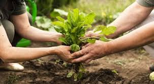

Challenge FIAP Schneider Eletric
Apresentação
Olá! Hoje apresentamos a vocês uma concepção inovadora que revolucionará a abordagem da Schneider em relação à sustentabilidade. A importância da sustentabilidade nos dias atuais é inquestionável, uma vez que a exaustão dos recursos naturais, a degradação dos ecossistemas, a poluição e as mudanças climáticas representam ameaças prementes que exigem ação imediata e conjunta. Nossa meta é desenvolver um aplicativo colaborativo, permitindo a participação de todos os funcionários em práticas sustentáveis, sendo recompensados por suas contribuições. Cada ação sustentável realizada será recompensada com pontos, que se acumularão ao longo do tempo. Ao progredirem na pontuação, os participantes alcançarão níveis representados por símbolos relacionados ao meio ambiente. Propomos desafios sustentáveis mensais para engajar a todos. Será um momento de aprendizado e diversão, enquanto trabalhamos para o bem do planeta. Implementamos um sistema de classificação no aplicativo para destacar os líderes em ações sustentáveis. Isso não apenas os reconhecerá publicamente, mas também inspira outros a seguirem o exemplo. Os funcionários serão organizados em equipes ou grupos, estimulando uma competição saudável. A equipe com melhor desempenho em termos de sustentabilidade será recompensada com prêmios coletivos ou até mesmo um dia extra de folga.
Acreditamos no poder das boas ideias! Um espaço no aplicativo será dedicado a compartilhar dicas e experiências sobre práticas sustentáveis. Estabeleceremos metas sustentáveis coletivas para nossa empresa. Acompanharemos nosso progresso por meio do aplicativo e celebraremos marcos significativos, recompensando todos pelo papel desempenhado nesse sucesso. Além das práticas, ofereceremos conteúdo educativo sobre sustentabilidade e conscientização ambiental. Juntos, podemos criar um ambiente de trabalho que não apenas promove a sustentabilidade, mas também inspira mudanças positivas em nossas vidas diárias. Ao adotarmos práticas sustentáveis no escritório, estaremos estendendo esse compromisso ao nosso cotidiano, influenciando nossas famílias, amigos e comunidades. Imagine o impacto cumulativo de pequenas ações sustentáveis ao longo do tempo. A economia de energia, a redução do desperdício e o uso consciente dos recursos não apenas beneficiarão o planeta, mas também contribuirão para uma cultura empresarial mais responsável e consciente. Vamos abraçar essa jornada com entusiasmo e determinação. Cada passo dado em direção à sustentabilidade é um investimento em um futuro mais saudável e equilibrado para todos. Estamos empolgados para ver o comprometimento de cada um de vocês e para testemunhar as transformações que nossa iniciativa pode trazer. Agradecemos antecipadamente pelo seu envolvimento e dedicação. Juntos, vamos criar um legado sustentável que transcende os limites do nosso ambiente de trabalho e se estende para além, deixando um impacto duradouro para as gerações futuras. Vamos fazer a diferença e moldar um mundo mais sustentável, começando aqui e agora.